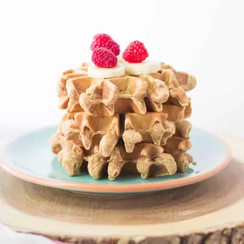

Peanut Butter Waffles

Ingredients
- 1 1/2 cups (235g) whole wheat flour
- 1/4 cup (25g) rolled oats
- 2 teaspoons baking powder
- 1 teaspoon cinnamon
- 1/2 cup (120g) mashed ripe banana
- 1/3 cup (75g) creamy peanut butter
- 2 medium eggs lightly beaten, at room temperature
- 1 1/2 cups whole fat milk
- 1/2 cup shredded carrots (50g measured before squeezing)
- 1/2 cup shredded zucchini (60g measured before squeezing )
Steps
- Preheat oven to 200 degrees Fahrenheit if you want to keep waffles warm.
- In a large bowl, mix all the dry ingredients until evenly distributed.
- In a separate bowl, combine the wet ingredients. If adding suggested vegetables, be sure to squeeze dry the zucchini and carrots before adding.
- Combine wet and dry ingredients together. Be careful not to over mix. Let the batter sit for 10 minutes or so.
- Preheat waffle iron. Grease by brushing or spraying with oil. Pour in 1/2 cup batter and cook according to manufacturer's directions until golden brown.
- If desired, place the waffles on a baking sheet and keep warm in the oven while you finish cooking the rest of the batter.
Recipe by Min Kwon · Kidfriendly Meals, from MJ and Hungryman. Saved here for personal use; the original has the full notes, tips and photos. Open original